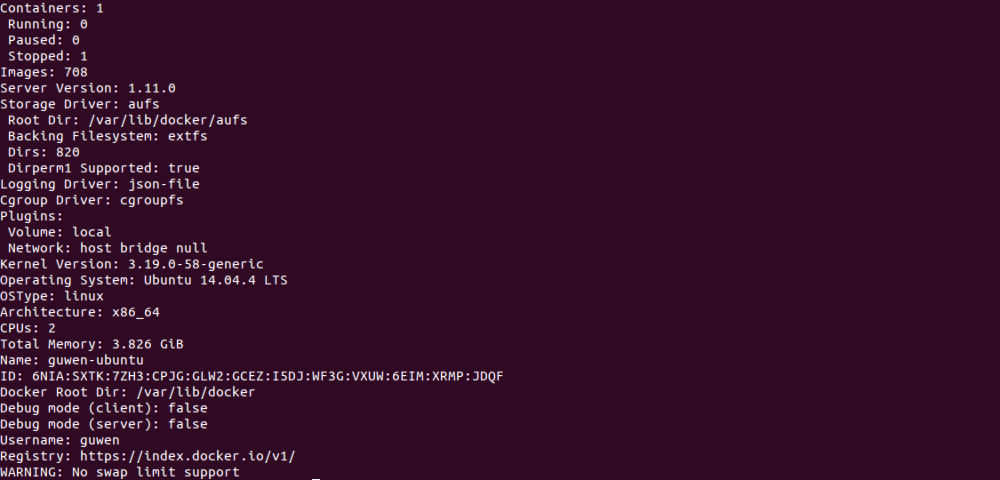
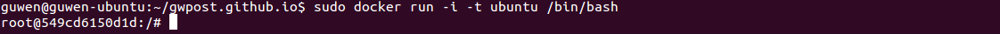
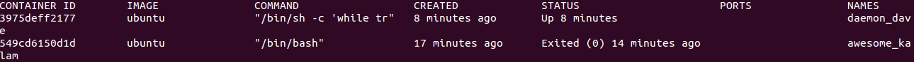

We’re going to start with checking that Docker is working correctly, and then we’re going to take a look at the basic Docker workflow: creating and managing containers. We’ll take a container through its typical lifecycle from creation to a managed state and then stop and remove it.
Ensuring Docker is ready
1
sudo docker info
This will show a list of any containers, any images (the building blocks Docker uses to build containers), the execution and storage drivers Docker is using, and its basic configuration. 
The single binary, docker, can act as both client and server. As a client, the docker binary passes requests to the Docker daemon (e.g., asking it to return information about itself), and then processes those requests when they are returned.
Building our first container
1
sudo docker run -i -t ubuntu /bin/bash
The -i flag keeps STDIN open from the container, even if we’re not attached to it. This persistent standard input is one half of what we need for an interactive shell. The -t flag is the other half and tells Docker to assign a pseudo-tty to the container we’re about to create. This provides us with an interactive shell in the new container. 
Working with our first container
1 2 3 4 5 6 7 8 9 10 11 12
# Checking the container's hostname hostname # Checking the container's /etc/hosts cat /etc/hosts # Checking the container's interfaces ip a # Checking container's processes ps -aux # Installing a package in our first container apt-get update && apt-get install vim # When you're done, type exit, and you'll return to the command prompt of your Ubuntu host exit
Listing containers
1
sudo docker ps -a
 Once we exited the container, that command ended, and the container was stopped.The container still exists.
Container naming
If we want to specify a particular container name in place of the automatically generated name, we can do so using the --name flag. Names are unique. If we try to create two containers with the same name, the command will fail. We need to delete the previous container with the same name before we can create a new one. We can do so with the docker rm command.
Starting a stopped container
1
sudo docker start bob_the_container
Attaching to a container
There is an interactive session waiting on our running container. We can reattach to that session using the docker attach command.
1
sudo docker attach bob_the_container
You might need to hit Enter to bring up the prompt.
Creating daemonized containers
Daemonized containers don’t have the interactive session we’ve just used and are ideal for running applications and services.
1
sudo docker run --name daemon_dave -d ubuntu /bin/sh -c "while true; do echo hello world; sleep 1; done"
Docker works by exploring the /var/lib/docker directory. This directory holds your images, containers, and container configuration. You’ll find all your containers in the /var/lib/docker/containers directory.
Deleting a container
1 2 3 4
# Deleting multi containers sudo docker rm 80430f8d0921 80430f8d0921 # Deleting all containers docker rm `docker ps -a -q`